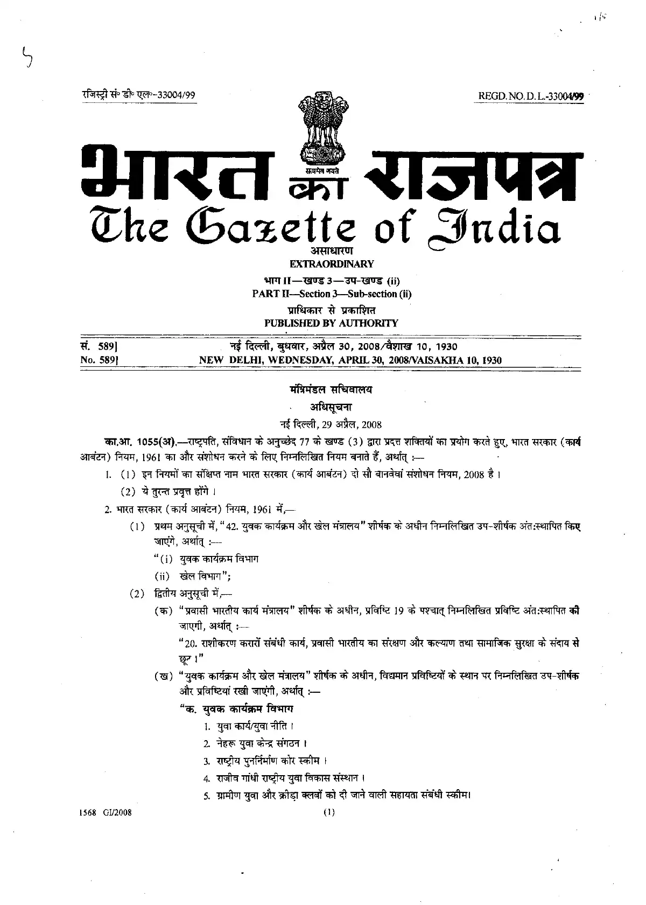
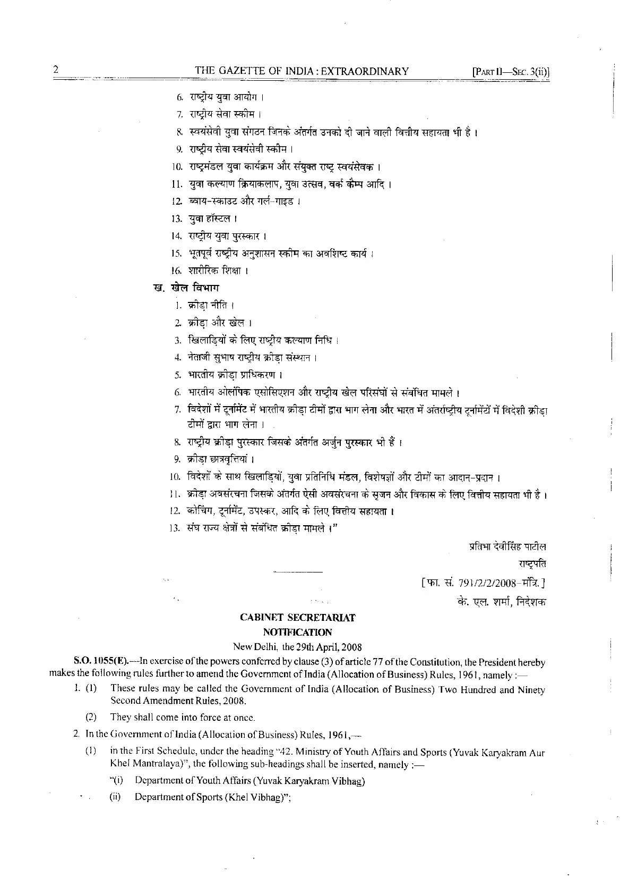
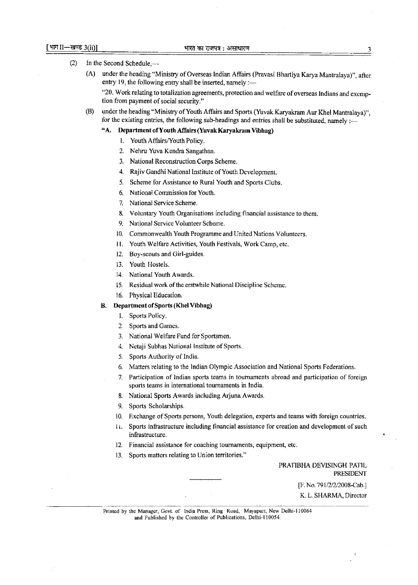

Amendment #292 (S.O. 1055(E), 2008)
3 changes: 1 to the First Schedule, 2 to the Second Schedule. 3 applied
The order, page by page
Page 1 of 3

Page 2 of 3

1after Schedule 1 › Ministry of Youth Affairs and Sports
- i. Department of Youth Affairs
- ii. Department of Sports
applied at schedule 1 › ministry 43 in the Rules after #292
Page 3 of 3

23after Schedule 2 › Ministry of Overseas Indian Affairs › entry 19
- 20. Work relating to totalization agreements, protection and welfare of overseas Indians and exemption from payment of social security.
applied at schedule 2 › ministry MINISTRY OF OVERSEAS INDIAN AFFAIRS › entry 20 in the Rules after #292
Schedule 2 › Ministry of Youth Affairs and Sports
- A. Department of Youth Affairs
- 1. Youth Affairs/Youth Policy.
- 2. Nehru Yuva Kendra Sangathan.
- 3. National Reconstruction Corps Scheme.
- 4. Rajiv Gandhi National Institute of Youth Development.
- 5. Scheme for Assistance to Rural Youth and Sports Clubs.
and 25 more
- 6. National Commission for Youth.
- 7. National Service Scheme.
- 8. Voluntary Youth Organisations including financial assistance to them.
- 9. National Service Volunteer Scheme.
- 10. Commonwealth Youth Programme and United Nations Volunteers.
- 11. Youth Welfare Activities, Youth Festivals, Work Camp, etc.
- 12. Boy-scouts and Girl-guides.
- 13. Youth Hostels.
- 14. National Youth Awards.
- 15. Residual work of the erstwhile National Discipline Scheme.
- 16. Physical Education.
- B. Department of Sports
- 1. Sports Policy.
- 2. Sports and Games.
- 3. National Welfare Fund for Sportsmen.
- 4. Netaji Subhas National Institute of Sports.
- 5. Sports Authority of India.
- 6. Matters relating to the Indian Olympic Association and National Sports Federations.
- 7. Participation of Indian sports teams in tournaments abroad and participation of foreign sports teams in international tournaments in India.
- 8. National Sports Awards including Arjuna Awards.
- 9. Sports Scholarships.
- 10. Exchange of Sports persons, Youth delegation, experts and teams with foreign countries.
- 11. Sports infrastructure including financial assistance for creation and development of such infrastructure.
- 12. Financial assistance for coaching tournaments, equipment, etc.
- 13. Sports matters relating to Union territories.
applied at schedule 2 › ministry MINISTRY OF YOUTH AFFAIRS AND SPORTS in the Rules after #292
How this document was read
From the Government of India (Allocation of Business) Rules, 1961 and their amendments, as published by the Cabinet Secretariat (cabsec.gov.in), read by orgpedia. The readings of the older scanned gazettes have known gaps.